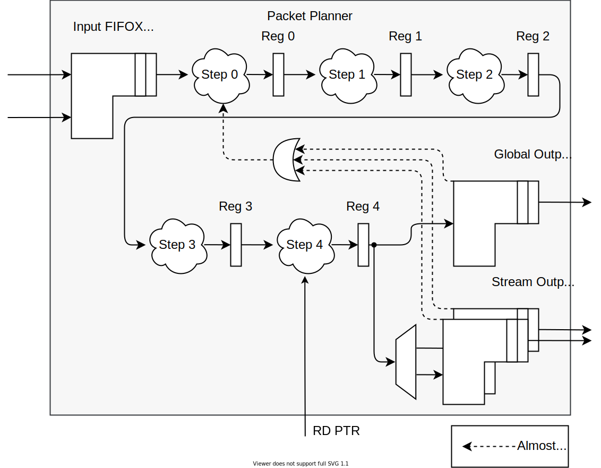

Packet Planner
The Packet Planner processes input MVB packet headers by assigning addresses to an outside buffer space to each packet, so that they are placed one after another with the needed inter-packet gaps and alignment. With the help from the input read pointer from the outside buffer it also checks space availability and stops the header input before the buffer overflows.
The user specifies:
Size of the target buffer
Packet alignment
Average inter-packet gap size
Minimum inter-packet gap size
The gap is calculated for each packet using the deficit idle count algorithm. (When one gap is over average size because of alignment, the next gap can be below average. But never below minimum.)
The calculated gap size allows the Packet Planner to set a address to the target buffer for each packet. After this the packets are checked for buffer overflow. To be able to check amount of free space in the buffer, the unit needs the current read pointer from the buffer. This pointer shifts when data (packets previously planned by the Packet Planner) have been freed from the buffer. The Packet Planner itself propagates its internal write pointer to the user. This is meant mainly for debug purposes. You can also use it to simulate an infinite target buffer space by connecting it directly back as the read pointer.
Architecture
{kind=link}
The Packet Planner receives multiple input packet headers from multiple independent interfaces (Streams).
Since all the pakcets are planned to a single linear buffer space, they are all serialized in a single input FIFOX Multi and processed as one stream of headers.
On the output the packets are distributed back to to the original Stream.
Each Stream has its own output FIFOX Multi.
Sometimes it is useful to have all the packets available in the global order as well (for example when working with the data in the target buffer).
For this reason the Packet Planner also provides an interfaces with output FIFOX Multi with headers from all Streams in the serialized order.
Thus each output header is sent to the global output as well as one of the stream outputs.
The global and the stream output interfaces are both optional and can be switched using generics GLOBAL_OUT_EN and STREAM_OUT_EN.
The unit processes multiple headers in parallel an is thus heavily pipelined to be able to reach high clock frequencies. Appart from the FIFOX Multis it contains a total of 5 pipeline stages (0 to 4). Here is the description of each stage:
Here the input data is stopped depending on the Almost Full propagated from the other end of the pipeline. The Almost Full offsets must be set in a way to still contain all headers, which could be present from register Reg0 to Reg4.
Calculation of inter-packet gaps. The size of each gaps depends on the length of the packet and the gap size of the previous packet. To eliminate the dependency between packets processed in the same cycle, a special component is used for the deficit idle count algorithm. This unit aproximates the ideal algorithm by distributing the deficit from the previous set of packets over all current packets evenly without taking into account the deficit generated by the current packets until the next cycle.
Calculation of target buffer address. The unit has an internal write pointer register to store the address shift from previous packets. The address of each packet depends on its length, the size of inter-packet gap before it and the address of the previous packet. Here the dependency between parallel headers could not be avoided, which makes it the most possible performance bottleneck.
Calculation of total sum of space taken by the packets in the target packet (from the start og the first one to the end of the last one).
Checking of available space in the target buffer. If all the packets fit in the buffer, they are let through. Otherwise the pipeline is stopped until the buffer read pointer shifts enough for the packets to fit.
Warning
Because multiple packets are processed at the same time and can only be passed through Step 4 all at once, a deadlock can occur if only some of the packets fit into an empty buffer, but not all. To avoid this, the component has additional logic in Step 0. The process reading packet headers from the input FIFOX Multi checks if their one-by-one accumulated length reaches the size of one buffer word. If so, no more headers are read from the FIFOX Multi in this cycle. (e.g. If there are 4 20-byte packets available at the FIFOX Multi output and the size of one buffer word is 32 bytes, only the first 2 packets will be passed to Reg0.) This way the available space checking cannot deadlock if the target buffer is large enough to contain at least: 1 word - 1 + 1 maximum-sized gap + 1 maximum-sized packet (worst case amount of space taken by packets processed in one cycle). This fix should not lead to any throughput reduction considering the data in the buffer itself are only processed one word each cycle.
Additional features
Because the component has FIFOX Multis on its input and outputs, the number of parallel headers processed in the internal pipeline can be set independently with generic PLANNED_PKTS.
This may allow the user to reduce internal logic complexity at the cost of throughput for small packets.
The internal pipeline is enabled by Almost Full signals from the output FIFOs.
Using generics STREAM_OUT_AFULL and GLOBAL_OUT_AFULL you can remove these FIFOs and generate the Almost Full signal yourself.
This will save you resources in cas you already have a FIFO placed somewhere after this component.
References
For more detailed description refer to Jan Kubalek’s thesis 2019/20.